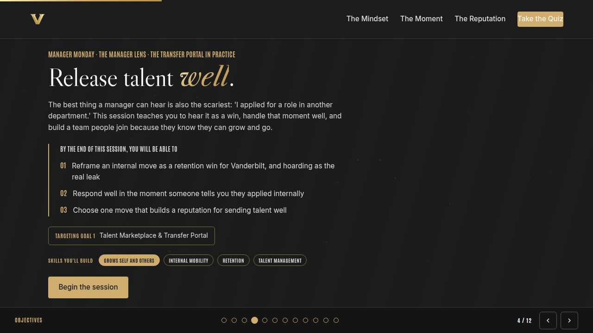
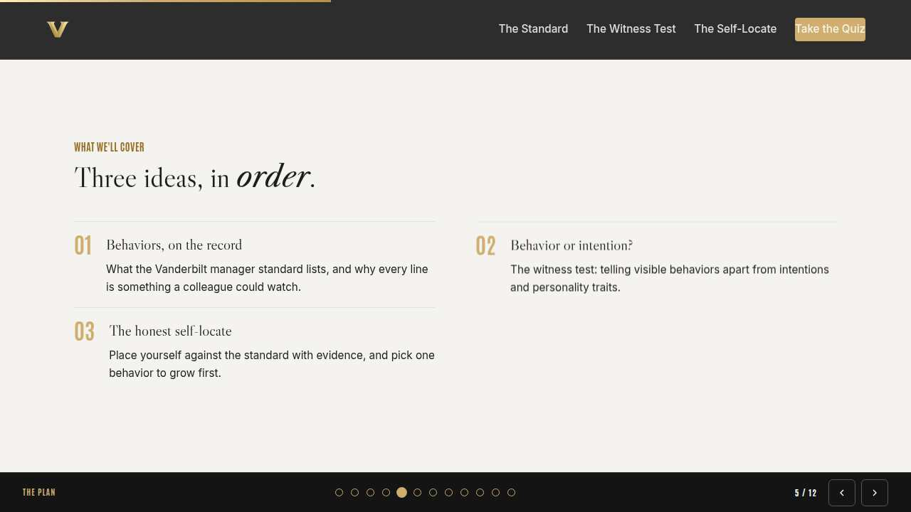
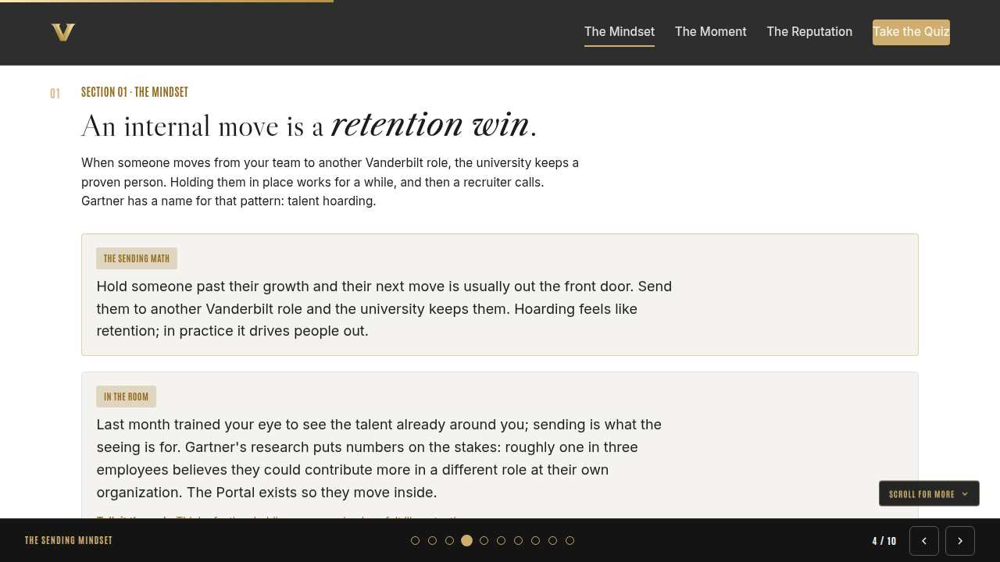
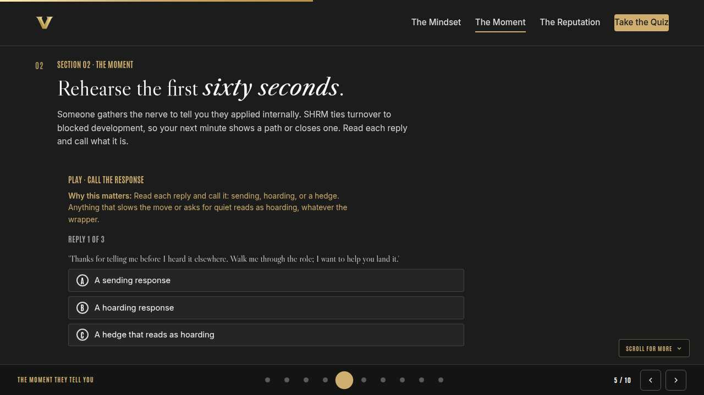
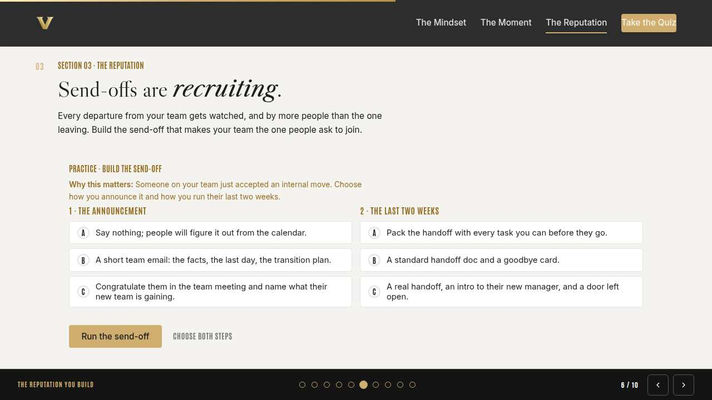
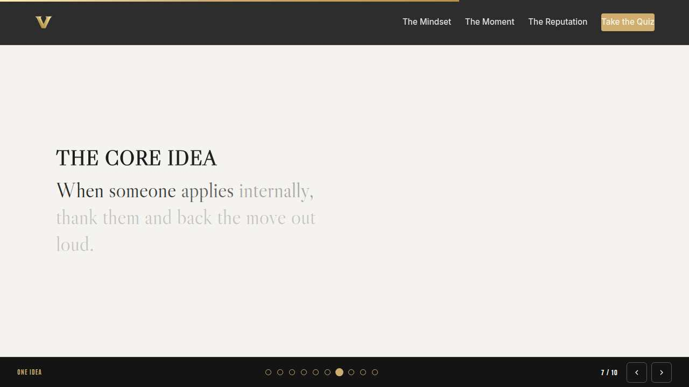
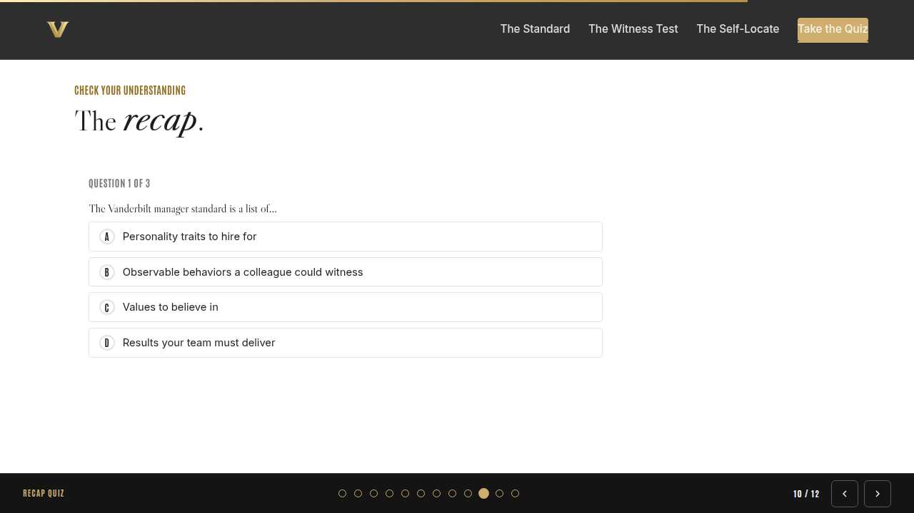
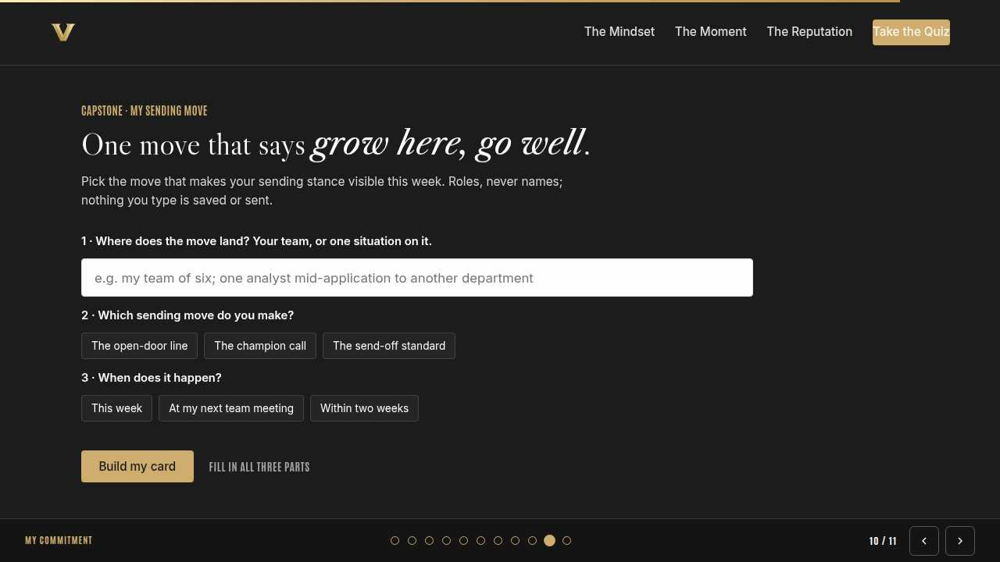
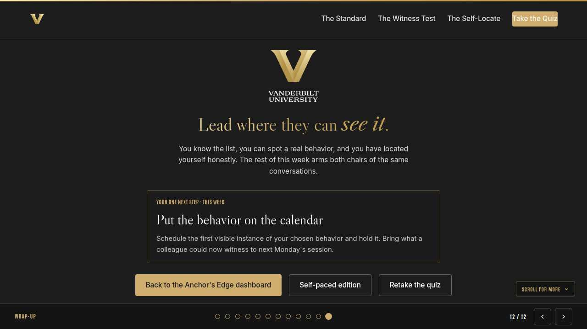

Vanderbilt · Anchor's Edge · ATD facilitator guide · print edition
The Sending Manager, the facilitator guide

Run of show
| Screen | Full (min) | Core (min) |
|---|---|---|
| Welcome / QR | 2 | 1 |
| Why we're here | 2 | 1 |
| Objectives | 1 | 1 |
| Agenda | 1 | skip |
| The sending mindset | 9 | 6 |
| The moment they tell you | 11 | 8 |
| The reputation you build | 9 | 6 |
| The core idea | 1 | skip |
| Recap quiz | 4 | 3 |
| Capstone commitment | 4 | 3 |
| Closing | 1 | 1 |
| Total | 45 | 30 |
The goal this month serves
Goal 1, Talent Marketplace & Transfer Portal.
Audience
Vanderbilt people managers and team leads in the Anchor's Edge weekly rhythm. Works for 6 to 40 on a call; breakouts run in pairs. No prerequisites; November is the Transfer Portal in Practice month, and this session opens it from the manager's side, building on last month's See the Talent Around You.
Room setup
Virtual, instructor led: camera on, deck link in chat, breakouts of 2 available. Learners follow on their own screens via the welcome-slide link or QR. Nothing typed into the deck is saved or sent.
Materials
- Meeting platform with screen share and breakout rooms; deck link ready to paste in chat
- Facilitator machine with the facilitator edition open; notifications off
- Learners on their own devices with the learner link
- Chat open for share-outs; the capstone copy button pastes there cleanly
A week before
- Run the learner edition start to finish and do every interaction honestly; you will demo at least one live.
- Read this month's theme page on the Anchor's Edge dashboard so the goal tie-in is fluent.
- Send the invite with the learner link and one line on what to bring.
The day before
- Test screen share with the facilitator edition; confirm the notes rail is readable.
- Open the learner link on a second device; the QR must land there.
- Run the section interactions once so you can drive them without reading.
30 minutes before
- Welcome slide up as people join; link pasted in chat.
- Close every other tab; silence the machine.
- Breakout rooms pre-configured in pairs.
When things go sideways
If Screen share or the site fails mid-session: Paste the learner link in chat and narrate from your own browser; every interaction runs on learner devices without the share.
If Breakout rooms are unavailable: Run the breakout prompts as 60-second chat storms: everyone types their answer at once, you read the best three aloud.
If A manager pushes back that they cannot afford to lose anyone right now: Validate the pressure, then do the math aloud: a supported move keeps the person at Vanderbilt and earns you an ally; a blocked one usually costs the person entirely within the year.
If Someone names a real employee while describing a live internal application: Protect them warmly and immediately: 'Hold that. Roles, never names.' The rehearsal works on patterns, never on a colleague's live confidential move.
Tough questions, ready answers
Q: If I encourage internal moves, won't my best people all leave at once?
Teams with sending managers show the opposite pattern: people stay longer because staying costs them no growth. The moves that do happen are staggered, planned, and keep the person one call away instead of gone from Vanderbilt.
Q: What if I genuinely can't spare the person for months?
Timing is a fair conversation, and the Portal expects transition planning. Say what you can honestly support and work the timeline with the hiring manager. The line to hold: the move happens, and you help shape when and how, never whether.
Q: How is this different from just losing headcount?
The position stays with your team; the person stays with Vanderbilt. You backfill a role, which is normal management, and you gain an advocate in another department. Compare that to an external resignation, where you backfill anyway and gain nothing.
Copy-paste templates
Pre-work invite (paste into the calendar invite)
Subject: Monday, 45 minutes on releasing talent well. Bring one memory: the best person who ever left your team, and where they went. You will never be asked to name them. Live and interactive; have the session link open on your own screen.
7-day pulse (send one week after)
Subject: Did the sending move happen? Three lines, reply whenever: 1) Did the sending move on your card happen? 2) What did your team's reaction tell you? 3) Who might the Transfer Portal serve next on your team?
After the session
Seven days out, send the pulse: 'Did the sending move on your card happen? What did your team's reaction tell you? Who on your team might the Portal serve next?' Count of completed sending moves is the Level 3 metric for the month.
Welcome / QR Full 2 min · Core 1
Get everyone into the deck on their own screen and set the tone: 45 minutes, live, hands on.
Say
“Welcome to Manager Monday. Scan the code or click the link in chat so this session runs on your screen too. Forty-five minutes, one focus: Being a sending manager: releasing talent well.”
Do
- Slide up as people join; link pasted in chat every few minutes.
- State the norm once: type into your own screen, nothing you enter is saved or sent.
Watch for: People lurking without the deck open. The interactions only land if the deck is on their screen.
Transition: “Before the topic, thirty seconds on why Vanderbilt is asking for this hour.”

Why we're here Full 2 min · Core 1
Anchor the session in the Chancellor's charge and name the goal this month serves, inside one minute.
Say
“One sentence from the Chancellor sits over everything we do: Vanderbilt will define the great university of the 21st Century and be it. Managers who send talent well make Vanderbilt a place people can build a whole career, and that is Destination Vanderbilt at work. This month serves Goal 1, Talent Marketplace & Transfer Portal.”
Do
- Read the mission line slowly, once; name the goal, once.
- No discussion here; the whole slide is under a minute.
Transition: “Here is what you will be able to do in 45 minutes.”

Objectives Full 1 min · Core 1
Set the contract for the session in under a minute.
Say
“By the end of this session: reframe an internal move as a retention win for vanderbilt, and hoarding as the real leak; respond well in the moment someone tells you they applied internally; choose one move that builds a reputation for sending talent well. That is the whole contract.”
Do
- Read the three objectives briskly; do not elaborate yet.
Transition: “Three stops to get there.”

Agenda Full 1 min · Core skip
Show the path so the room can pace itself.
Say
“Three stops: the sending mindset, the moment they tell you, the reputation you build. Each one has something to play with, so keep the deck open.”
Do
- Point once at each stop; ten seconds each.
Transition: “Stop one.”
Core path: Core: skip the read-through, gesture at the slide in passing.

The sending mindset Full 9 min · Core 6
Install the reframe: an internal move keeps talent at Vanderbilt, and hoarding is the real leak.
Say
“Here is the sentence this month hangs on: talent you release inside Vanderbilt is talent you kept. When someone moves from your team to another department, the university keeps a proven person and everything they know. Hold someone in place past their growth and you have not kept them, you have delayed them, and the delay usually ends out the front door. Gartner has a name for that habit, talent hoarding, and finds it is one of the main reasons internal mobility stalls in organizations. It feels like retention. It is the leak.”
Do
- Read the sending math card aloud once; it is the section's whole argument.
- Show the in-the-room card; it carries the frame in place of the quiz. Let it land for a beat.
- Open the discussion: what did holding someone actually cost? Take two or three voices.
- Run the breakout: someone who left, and whether an internal move would have kept them.
Ask
“Think of the best person who ever left your team. Where are they now?”
Expect:
- Often another employer entirely
- Occasionally an internal move that worked
Respond: If they left Vanderbilt: that is the leak this month plugs. If they moved internally: ask what their manager did right, because that is today's syllabus.
Debrief: The gap on your team is real and temporary. The talent that walks out the front door is gone. That trade is the whole mindset.
Watch for: Managers doing the math only from their team's side. Keep pulling the frame up to the university level, where the move is a win.
Transition: “The mindset gets tested in one specific minute. Here it is.”
Core path: Core: skip the breakout; run the context card and take one discussion voice in chat.

The moment they tell you Full 11 min · Core 8
Rehearse the first sixty seconds after someone says they applied internally, so the trained response beats the reflex.
Say
“At some point this year, someone will gather their nerve for a week and then tell you they applied for an internal role. Your face and your first sentence become the story they tell. The reflex is loss, and the reflex will show unless you have rehearsed something better. So we rehearse. Say thank you, get curious about the role, then back them where people can hear it. The Portal has no secrecy in it, and neither should you.”
Do
- Run Call the response live; everyone plays on their own screen.
- After round three, pause on the hedge: ask why 'keep it between us' undoes the support.
- Run the breakout on what they would honestly feel in that minute.
Ask
“What makes the hedge in round three worse than it sounds?”
Expect:
- It makes mobility feel illicit
- It protects the manager rather than the person
- It contradicts the open Portal norm
Respond: All of it. Secrecy converts a supported move into a guilty one. If the move is good, it can be public; if it needs hiding, ask yourself from whom.
Debrief: Feel the loss privately and give the backing publicly. Rehearsed words are how the better manager shows up first.
Watch for: Managers arguing the hedge is reasonable during a busy season. Acknowledge the pressure, then re-anchor: timing talk is fine; secrecy is never part of it.
Transition: “One moment handled well is good. A pattern of them builds something better: a reputation.”
Core path: Core: run the trainer, skip the breakout, take one voice on the hedge question.

The reputation you build Full 9 min · Core 6
Show that public send-offs are recruiting, and build one worth copying.
Say
“Nobody reads your leadership philosophy. Everybody watches your send-offs. When someone leaves your team for another department, the person leaving, the team staying, and everyone deciding where to grow next are all taking notes. A manager people grow and go well from never has an empty pipeline. So let's build the send-off that earns that.”
Do
- Run Build the send-off; two minutes to choose both slots and run it.
- Ask one volunteer to read their outcome aloud, weak or strong.
- Point at the pattern: public pride plus a protected relationship.
Ask
“Why does the quiet exit hurt more than it seems?”
Expect:
- The team invents the story
- It signals moves are betrayals
- The mover retells it elsewhere
Respond: Right. Silence is never neutral; it is the worst story, told by someone else. The announcement is the cheapest reputation move you have.
Debrief: A send-off has three watchers: the mover, the team, and the people deciding where to grow next. Build it for all three.
Watch for: Managers stuck on backfill anxiety. It is real and worth its own conversation with HR; keep it from swallowing the reputation point.
Transition: “Quick recap, then you pick your own sending move.”
Core path: Core: everyone runs the builder solo; skip the read-aloud.

The core idea Full 1 min · Core skip
Land the one sentence the session exists to install.
Say
“If you keep one sentence from today, this is it. Read it once, out loud: Talent you release inside Vanderbilt is talent you kept.”
Do
- Pause two beats after reading; the word animation carries it.
Transition: “The recap makes it stick.”
Core path: Core: pass through in stride; the sentence reads itself.

Recap quiz Full 4 min · Core 3
Score the learning while it is fresh; wrong answers are teaching moments, not failures.
Say
“Three questions, on your own screen. Answer honestly; the explanations are where the learning sticks.”
Do
- Give the room 90 seconds to run it individually.
- Ask for a show of results in chat: how many got 3 of 3?
- Read out the explanation for whichever question drew the most misses.
Watch for: Rushing past the why lines. The explanations carry the teaching.
Transition: “Now point it at your real week.”

Capstone commitment Full 4 min · Core 3
Convert the session into one named, dated action per person.
Say
“Now make it real. One sending move, aimed at your actual team, roles only. Pick the move, pick the window, build the card, and copy it somewhere you will see it before Friday. Two minutes, quiet, go.”
Do
- Two quiet minutes; everyone builds their own card.
- Invite two or three volunteers to read their card aloud or paste it in chat.
- Remind: copy the card somewhere you will see it this week.
Watch for: Vague entries. Nudge for a name-able situation and a real date.
Transition: “Last slide.”

Closing Full 1 min · Core 1
End with the next step and where this thread continues.
Say
“You leave with rehearsed words for the hardest minute and a send-off standard for the rest. Tomorrow's Take-Off Tuesday walks the Transfer Portal itself, end to end, so you can see exactly what your people see when they raise a hand. Thursday's Thrive session is on networking, building the internal bridges that make these moves normal. And if you want the deeper course this month, it is Building Your Team by Chris Croft on LinkedIn Learning, alongside the navigators' live Portal walkthrough.”
Do
- Point at the next-step card; one sentence.
- Name the rest of the week's rhythm: the other sessions echo this month's theme.
Generated from facilitator/notes.json. The on-screen facilitator edition lives at ./ alongside this guide.